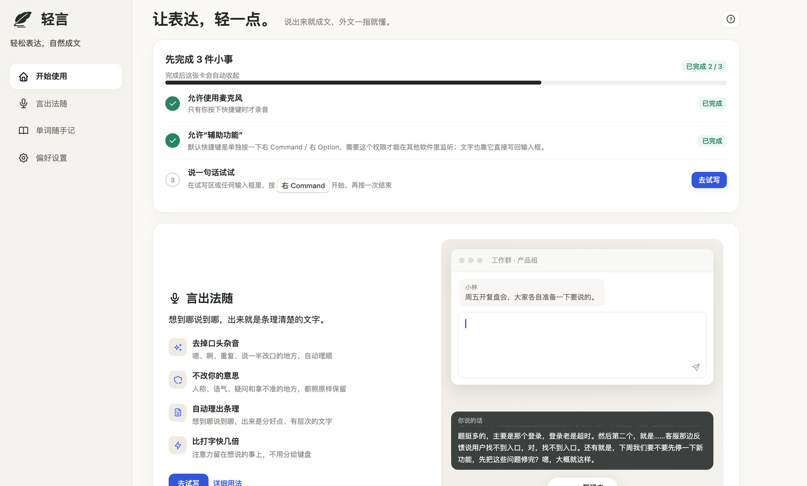
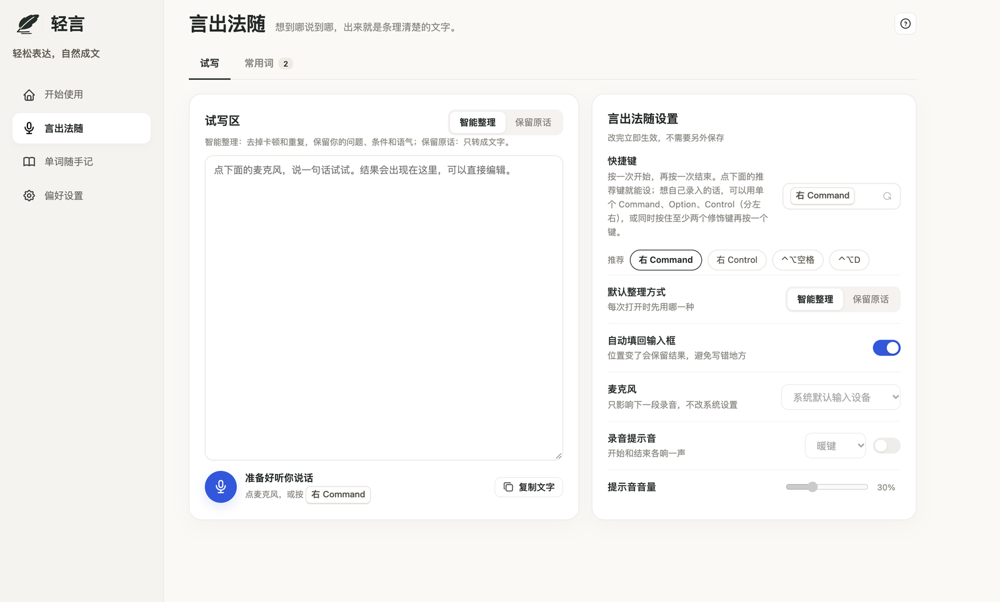
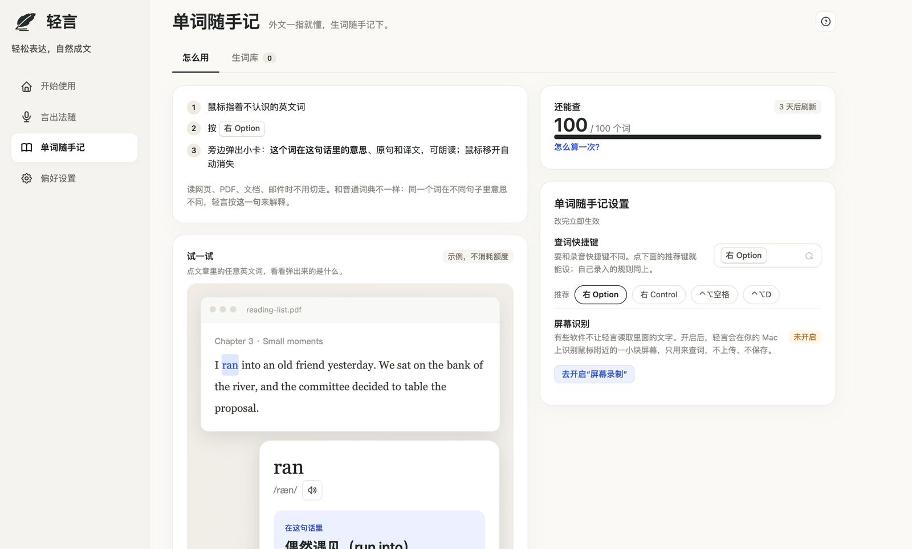

说出来，就是一段好文字
在任何输入框里，按一下快捷键开口说话，再按一下结束。轻言把你的话整理好，自动填回刚才的输入框。
- 智能整理：去掉卡顿和重复，保留你的问题、条件和语气。
- 保留原话：只转成文字，一个字不改。
- 常用词：人名、产品名、行话，说多少遍都写对。
- 单独按一下 右 Command 就能开始，快捷键可以自己改。
想到哪说到哪，出来就是条理清楚的文字；读外文时遇到不认识的词，按一下就懂。

在任何输入框里，按一下快捷键开口说话，再按一下结束。轻言把你的话整理好，自动填回刚才的输入框。

读网页、PDF、文档、邮件时不用切走。鼠标指着不认识的英文词，按一下 右 Option，旁边弹出小卡。

不用学新界面，写字的地方都能用。
用手机号收验证码登录，按提示允许麦克风与辅助功能。
光标放在想写的地方，按快捷键说话；再按一下结束。
整理好的文字直接出现在输入框里，需要时也能一键复制。
写在前面的几句实话。
录音只在你主动开始之后进行，结束就停止，不会在后台偷偷收音。
语音识别和文字整理需要在云端完成，所以音频与文字会交给模型服务处理；轻言不保存你的录音和历史正文。
图片取词需要你主动开启“屏幕录制”权限，只识别鼠标附近的一小块，在本机完成，不上传、不保存。
你记下的生词只保存在自己的电脑上；你也可以随时注销账号。
目前只做 Mac，首发面向中文用户。
第一阶段是免费邀请内测，付费方式以后再定，到时会提前告诉大家。
还不能。轻言正在筹备邀请内测，开放后会在这里更新。
需要。语音识别、文字整理和查词都在云端完成，断网时轻言会直接告诉你“没有连接网络”。
辅助功能用来把文字填回你正在输入的地方；屏幕录制只在你开启图片取词时用来识别鼠标附近的文字。不想用的功能可以不开。
邀请内测筹备中，开放后会在这里更新。